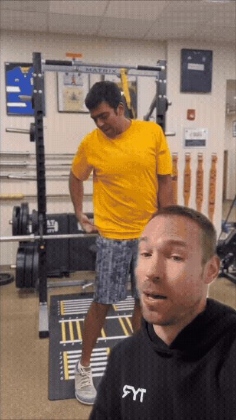
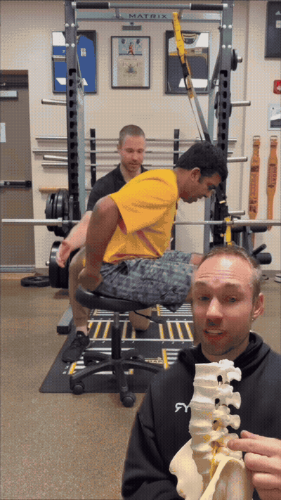
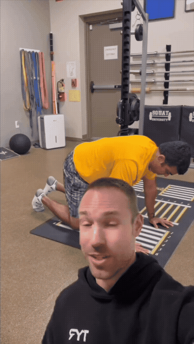
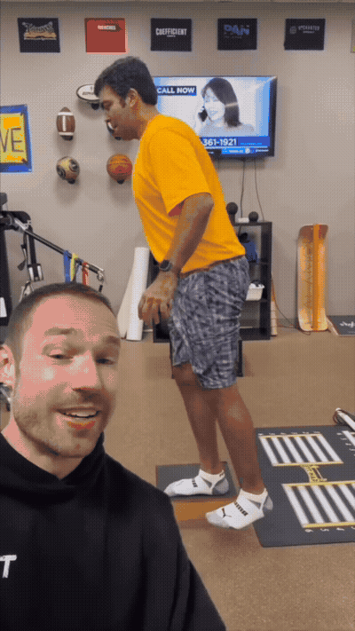

Diagnostic: how the spine handles compressive load. Neutral-spine pull on a stool = pain-free; flexed-spine pull sparks pain → flexion intolerance, often disc-related.

Diagnostic: hip internal rotation on the painful side. If internal rotation recreates the back pain but bracing the core first removes it → relative stiffness dysfunction (hip stiffer than low back).

Start of the core-stability routine. Full bird dog recreated pain, so it was regressed: towels under the armpits to engage the lats and better stabilize the spine.

The vital part of the movement: a hip hinge — small single-leg squat with a big forward hinge — to engage the glute as you hinge back. 10 reps, then add it to the windmill pattern.